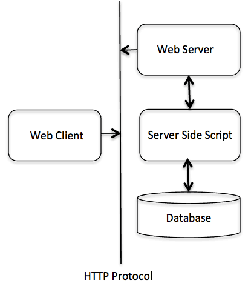

MY NOTES
Welcome to Kembo's notes. I try to write a little more on what I have learnt so far

VERSION CONTROL
Introduction to Version control comparing Git to Github July 21, 2021
Version control, also known as source control, is the practice of tracking and managing changes to software code. Version control systems are software tools that help software teams manage changes to source code over time. As development environments have accelerated, version control systems help software teams work faster and smarter.
Git
Git is a distributed version control system where each user can make changes to an entire repository on their system. It uses command line and with git it’s easy to undo changes back and forth with a precise explanation of the changes that are made. It has the ability of:
- Keeping a track of the changes i.e. different versions of the same file.
- It also keeps a record of all the files present in a project.
- Comparing and analyzing different codes with a detailed explanation.
- Local repository: this is the directory created on your local machine. code written here is private until it is pushed to the remote repository.
- Remote repository: this is the public repository or platform that hosts your code. We use Git, the version control, to push our code to the remote repository.
Github
Github is an online hosting platform for all the code that is pushed to it using Git. It has features that foster collaboration by different software developers from whatever part of the world.
MICROPROCESSORS VERSUS MICROCONTROLLERS
To document the difference between microprocessors and microcontrollers July 21,2021
Microcontroller and Microprocessor both terms seem similar but there is a huge difference between these two ICs.
Differences
- Microprocessors only have CPU in the chip and the rest connected externally while microcontrollers also have RAM, ROM and other peripherals along with the CPU or processor on a single chip
- Microprocessors are used in an application where the task is not predefined thus assigned by the user while the microcontroller is designed for a specific task
- Microprocessors have flexible structures as you can decide on the size of all the peripherals (RAM,ROM and number of I/O ports) while microcontrollers have a fixed structure once designed
- Microprocessors have higher clock speeds (1GHz-4GHz) while microcontrollers have lower clock speeds (1MHz-300MHz)
- Microprocessors require higher amount of memory (128GB-2TB) as they run operating systems and complicated tasks while microcontrollers have less memory requirement (32KB-2MB) as they run specifically assigned tasks.
- The common peripheral interface for the microprocessor is USB, UART, and high-speed Ethernet while the microcontroller peripheral interface is I2C, SPI, and UART.
- Microprocessors handle more binary data per cycle (32bits and 64 bits) compared to microcontrollers which handle less (8bit,16bit or 32bit). This basically implies that the microprecossors have more data and address buses compared to microcontrollers
- The power consumption of a microprocessor is higher compared to microcontrollers
Top 5 Most Used Microcontrollers and Microprocessors
| MICROPROCESSORS | MICROCONTROLLERS |
|---|---|
| AMD Ryzen 9 5950X | STM32F103C8T6 |
| Intel Core i9-10900K Processor | ATmega328 |
| Nvidia | PIC16F877A |
| Qualcomm | Attiny85 |
| Samsung | MSP430G2452 |
Top 10 Kenyan Companies That Use Microcontrollers and Microprocessors
The following are the automated solutions industries that employ microcontrollers and microprocessors in Kenya:
- Gear Box
- Esystronika Ltd
- The Nairobi Robotics
- Nerokas Engineering Solutions
- Novatech Engineerics
- Octrinsic Technologies Ltd
- Lectrotel Microsystems
- Smart Embedded Systems Ltd
- Maxtech Technology Solutions
- Socabelec East Africa Ltd
MULTI-FACTOR AUTHENTICATION
I shall specifically focus on two-factor authentication July 23, 2021
Multi-factor authentication is an electronic authentication method in which a user is granted access to a website or application only after successfully presenting two or more pieces of evidence, called factors, to an authentication mechanism. Multi-factor authentication encompasses two-factor authentication (abbreviated as 2FA).
Essentially it entails the following:
- Knowledge Factor: This is something only the user of the system knows. It can be their password, pin or username. Essentially this the only typical factor for a single factor authentication (SFA)
- Possession Factor: This is something only the user of the system has. It analogically functions as a traditional key and thus can be a code sent to the user's phone. It can be sent as an email, or be a software token.
- Inherence Factor: This is something only the user of the system is. It can be their fingerprint, voice, iris or facial scans.
How Does Multi-factor Authentication Work?
Multi-factor authentication works by requesting additional layers of verification during sign-in. Users must verify their identities using at least two out of three different factors. Two factor Authentication only requires two of the three factors mentioned above.
Why Use Multi-factor Authentication?
Traditionally, single factor authentication was employed. It was in the form of what the user knows (their password or user name). However, due to the massive improvements to the computing and memory power of computers and processors, it has become increasingly easier for hackers to attack and penetrate password databases, or use sheer brute computing power to guess your password. Single factor authentication hence is no longer as reliable or secure as proved by prevalent data leaks.
Multi-factor Authentication therefore offers the following advantages:
- Improved reliability: Due to its added layer of security, it allows businesses to improve the reliability of their fraud prevention efforts, and defense against hacking, impersonation, and ID theft. This is also achieved in a cost-effective way
- Compliance with Regulation and Industry Best Practices: MFA allows businesses to comply with stipulated regulatory measures that ensure minimal customer identity theft. The added layer of security also ensures compliance.
- Simplifying the Customer Identification Process: MFA helps businesses simplify their customer identification process and helps improve user experience. Through the additional layer of security, the burden for users and customers is decreased in terms of them verifying that they are who they say they are.
Types of Two-factor Authentication
The following are the comon types of Two factor authentication:
- SMS 2FA: When you enable a site’s SMS 2FA option, you’ll often be asked to provide a phone number. Next time you log in with your username and password, you’ll also be asked to enter a short code (typically 5-6 digits) that gets texted to your phone.
- Authenticator App/TOTP 2FA: The underlying technology for this kind of authentication is Time-Based One Time Password (TOTP) which is part of the Open Authentication architecture (OATH). Authenticator App is still another phone-based option for 2FA and uses an application that generates codes locally based on a secret key. Typically, this will require one to scan a given QR code. Once you’ve scanned such a QR code, your authenticator application (such as Google Authenticator) will produce a new 6-digit code every 30 seconds. Similar to SMS 2FA, you’ll have to enter one of these codes in addition to your username and password in order to log in. The secret key is stored physically on your phone thus you can use them even when your phone is not connected to the mobile network.
- Push-based 2FA: Some systems send a prompt to one of your devices during login. This prompt will indicate that someone (possibly you) is trying to log in, and an estimated location for the login attempt. You can then approve or deny the attempt.
- FIDO U2F/Security Keys:This is is a relatively new style of 2FA, typically using small USB, NFC or Bluetooth Low Energy (BTLE) devices often called “security keys.” To set it up on a site, you register your U2F device. On subsequent logins, the site will prompt you to connect your device and tap it to allow the login.
Companies That Use Two Factor Authentication
The following are top companies and organisations that use two-factor authentication:
- Amazon
- Apple
- Microsoft
- Github
IoT COMMUNICATION PROTOCOLS
To explore the Common IoT Protocols, their characteristics and use cases July 25, 2021
Internet of things is the technology that allows the transmission of data and commands to and from devices in real time. These devices are connected to each other through an online platform that both aggregates and analyzes the data. These end devices use the communication protocols to communicate seamlessly without human intervention. The protocols discussed here are as follows:
- Message Queue Telemetry Transport Protocol
- Hypertext Transfer Protocol
- Constrained Application Protocol
Message Queuing Telemetry Transport
MQTT is a publish-subcribe protocol where information is only sent once to a publish/subscribe server which then relays (retransmits) the information to other subscribers. This communication pattern reduces the network traffic by half and communication occurs in an efficient manner. It uses low bandwidth for communication thus suitable for remote areas and is also extremely lightweight.
Characteristics of MQTT
- It does not require the client and server to establish connection at the same time.
- It is a machine to machine protocol.
- Allow clients to only subscribe to a narrow section of topics so that they only receive relevant information.
- It provides real time communication and is thus fast.
These are briefly described by the components of MQQT as follows:
- Message: This is the data that is carried across the network and consists of payload data, collection of properties, Quality of service and topic name.
- Client: A client can either publish data to a server or subscribe to a server so as to receive published data.
- Server or Broker: This is the device or program that allows the client to either publish or subscribe.his it does by processing the requests to access these dual services.
- Topic: This is used to publish the message. In essence it is the label provided to the message for sorting by the server.
The MQTT protocol is the standard for all major cloud platforms, including Microsoft Azure, IBM Cloud, and Amazon Web Services. Facebook even uses MQTT for its Facebook Messenger and Instagram apps. For industrial applications, MQTT is especially well-suited for remote monitoring Internet of Things and Industrial Internet of Things (M2M).
Disadvantages of MQTT
- MQTT uses TCP protocol for transport hence consumes additional power due to the handshakes and also the tendency for TCP connected devices to keep the sockets open for each other.
- It is difficult to create a globally scalable MQTT network. This is due to its centralized broker that which adds overhead to each client device.
- It is difficult to implement flow control with it.
- In order to use MQTT, clients must have and support TCP/IP
Hypertext Transfer Protocol
This is the protocol that allows for the fetching of resources within the web and is the foundation of any data exchange on the web. It operates on the client-server basis such that the requests to the server are initiated by the recipient (client) which is usually the web browser. When a document is requested for say an HTML for example, the complete document will be reconstructed after the server fetches the associated sub documents such as videos,images,scripts, layout descriptions etc.
Characteristics of HTTP
- Media Independent: Any type of media can be sent alongside HTTP as long as the client and server can handle it.
- Connectionless: The client who initiates the request disconnects from the server once the request is sent and as they wait for the response.
- Stateless: The server and client are aware of each other during the current request only and they afterwards forget each other. This therefore implies that neither the server or client can retain the information about different requests across different web pages.
HTTP rides on the TCP protocol in the transport layer thus works in the commonly referred 3-way handshake manner . At first, clients send a SYN (Synchronous)packet to the server and then the web server will respond with SYN-ACK (Synchronous-Acknowledge)packet to confirm successful reception of previous packet. After this, the client again sends a ACK (Acknowledge) packet, and thus a connection is established. In addition, the client sends a HTTP request to the server for a resource and waits for it to respond to a request. The web server will then process the request, find the resource and send the response to the client. If no more resources are required by the client, it sends a FIN (Finish) packet to close the TCP connection. 
Applications of HTTP
- HTTP protocol is used in the World Wide Web to transmit data in the form of text, audio, images, and video from the Web Server to the user’s web browser and vice versa.
- It is used in advanced microcontrollers and microprocessors such as Raspberry Pi to transmit data and communicate with other devices.
- Unsuitable for small devices which find it heavy and superfluous since they do not need much interaction. HTTP also requires a minimum of nine TCP packets, and even more in case of packet loss.
- Being fundamentally reqest-response structured, it does not support the event driven nature of most of the sensors.
- Not real-time as the client has to wait after sending a request to the server. This causes latency. Additionally, This synchronous manner of communication (instant reception of requested data, without scheduling or over time as in asynchronous modes) weigh heavily on sensors limited computing resources.
Constrained Application Protocol
Constrained Application Protocol (CoAP) is a specialized web transfer protocol for use with constrained nodes (devices such as microcontrollers) and constrained networks in the Internet of Things.
Characteristics of CoAP
- Low overhead and very simple to parse.
- Universal Resource Identifier (URI) and content-type support.
- Proxy and caching capabilities.
- Asynchronous message exchange.
- Web protocol used in M2M with constrained requirements.
COAP uses User Datagram Protocol (UDP) as the underlying network protocol. COAP is basically a client-server IoT protocol where the client makes a request and the server sends back a response as it happens in HTTP. The methods used by COAP are the same used by HTTP. The protocol is designed for reliability in low bandwidth and high congestion through its low power consumption and low network overhead. In a network with a lot of congestion or limited connectivity, CoAP can continue to work where TCP-based protocols such as MQTT fail to exchange information and communicate effectively.
CoAP employs a two layers structure that. The bottom layer is a message layer that has been designed to deal with UDP and asynchronous switching. The request/response layer concerns communication methods and deals with request/response messages.
Applications of CoAP
- Best use case is in home communication networks as they are characteristically low cost and light weight.
- It is also used for machine to machine communication.
- Unreliable due to use of UDP hence some packets are lost or reach unordered.
- It increases processing time as it acknowledges receipt of every message.
- It is unencrypted, just like MQTT and thus raises the impelentation of the overhead.

OPEN SYSTEM INTERCONNECTION MODEL(OSI)
To briefly discuss the layers of the OSI model, July 26, 2021
The OSI model is a conceptual framework used to generalize the understanding of any networking or telecommunication system. The model uses layers (7 of them) to help give a visual description of what is going on with a particular networking system. This simplifies the troubleshooting process. I shall discuss the 7 layers from the bottom (physical) to top (application) layer:
Layer 1-Physical LayerThis layer represents the electrical and physical representation of the system. It determines the mode of communication (full or half duplex or simplex) and medium of communication (wired or wireless). It also specifies the line configuration (point to point or multipoint). It also determines the topology of the network (such as mesh, star, bus or combined). There are no specific protocols used here however. The electrical bit also includes the proper wiring and power supply to all the devices such as computer and router.
Layer 2-Data LayerThe Data Link Layer provides node-to-node data transfer (between two directly connected nodes or devices), and also handles error correction from the physical layer. It has two sub layers:
- Medium Access Control (MAC): this handles the encapsulation and framing and sequencing of data, error checking, multiple access to the medium, resolves conflicts arising from multiple access and also resends data in case of packet loss. It also sits between the Logic Link Control and the top layers.
- Logic Link Control (LLC): this handles the logic of data transmission. This includes flow control, error control and the protocols. Layer 2 protocols include Ethernet and Point-to-Point.
This layer mainly deals with the logical addressing and routing data by adding IP addresses, source and destination nodes. The protocols that are employed here are such as IP (one can use IPv4 or IPv6), Internet Control Message Protocol (used for connection checks) and Internet Group Management Protocol (used for multicasting). Network layer also maps different addressing schemes.
Layer 4-Transport LayerThis layer handles host to host communication. It mainly handles the segmentation of data received from the upper layers, numbers every byte in the segment and ensures that data is sent in the same sequence that it was received (error control). It uses two protocols to facilitate congestion control:
- Transmission Control Protocol: has 3-way handshake with acknowledgement feature and is connection oriented hence it is reliable but not suited for real time data transmission.
- User Datagram Protocol: does not perform error and flow control and is thus faster and suitable for real time applications but is however unreliable.
This sets up a session for two devices (computers or servers), coordinates (how long should a system wait for a response) and termination between the applications at each end of the session.
Layer 6-Presentation LayerIt represents the area that is independent of data representation at the application layer. It deals mainly with the translation of data from network to application format and from application to network format. Thus in essence "presents" data to the network or application. This can involve encryption and decrpytion.
Layer 7-Application LayerThis is the layer closest to the users. It deals with the communication of the whole data message and thus provides an interface between network services and application programs. It also provides services to the end users such as file transfer and web browsing. To achieve these asvanced operations it uses high level protocols such as File Transfer Protocol (FTP), Hypertext Protocol (HTTP) etc.